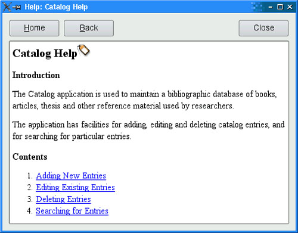

|
|
Using the user's web browser to show online help is easy to do, but as we have noted, the approach does have a few drawbacks. We can eliminate these problems by providing our own help engine based on the QTextBrowser class.
In this section, we present the simple help browser shown in Figure 17.3 and explain how it can be used within an application. The window uses a QTextBrowser to display help pages that are marked up with an HTML-based syntax. QTextBrowser can handle a lot of HTML tags, so it is ideal for this purpose.

We begin with the class definition:
class HelpBrowser : public QWidget
{
Q_OBJECT
public:
HelpBrowser(const QString &path, const QString &page,
QWidget *parent = 0);
static void showPage(const QString &page);
private slots:
void updateWindowTitle();
private:
QTextBrowser *textBrowser;
QPushButton *homeButton;
QPushButton *backButton;
QPushButton *closeButton;
};
The HelpBrowser provides a static function that can be called from anywhere in the application. This function creates a HelpBrowser window and shows the given page.
HelpBrowser::HelpBrowser(const QString &path, const QString &page,
QWidget *parent)
: QWidget(parent)
{
setAttribute(Qt::WA_DeleteOnClose);
setAttribute(Qt::WA_GroupLeader);
textBrowser = new QTextBrowser;
homeButton = new QPushButton(tr("&Home"));
backButton = new QPushButton(tr("&Back"));
closeButton = new QPushButton(tr("Close"));
closeButton->setShortcut(tr("Esc"));
QHBoxLayout *buttonLayout = new QHBoxLayout;
buttonLayout->addWidget(homeButton);
buttonLayout->addWidget(backButton);
buttonLayout->addStretch();
buttonLayout->addWidget(closeButton);
QVBoxLayout *mainLayout = new QVBoxLayout;
mainLayout->addLayout(buttonLayout);
mainLayout->addWidget(textBrowser);
setLayout(mainLayout);
connect(homeButton, SIGNAL(clicked()), textBrowser, SLOT(home()));
connect(backButton, SIGNAL(clicked()),
textBrowser, SLOT(backward()));
connect(closeButton, SIGNAL(clicked()), this, SLOT(close()));
connect(textBrowser, SIGNAL(sourceChanged(const QUrl &)),
this, SLOT(updateWindowTitle()));
textBrowser->setSearchPaths(QStringList() << path << ":/images");
textBrowser->setSource(page);
}
We set the Qt::WA_GroupLeader attribute because we want to pop up HelpBrowser windows from modal dialogs in addition to the main window. Modal dialogs normally prevent the user from interacting with any other window in the application. However, after requesting help, the user must obviously be allowed to interact with both the modal dialog and the help browser. Setting the Qt::WA_GroupLeader attribute makes this interaction possible.
We provide two search paths, the first a path in the file system that contains the application's documentation, and the second the location of the image resources. The HTML can include references to images in the file system in the normal way and references to image resources by using a path that begins with :/ (colon slash). The page parameter is the name of the documentation file, with an optional HTML anchor.
void HelpBrowser::updateWindowTitle()
{
setWindowTitle(tr("Help: %1").arg(textBrowser->documentTitle()));
}
Whenever the source page changes, the updateWindowTitle() slot is called. The documentTitle() function returns the text specified in the page's <title> tag.
void HelpBrowser::showPage(const QString &page)
{
QString path = directoryOf("doc").absolutePath();
HelpBrowser *browser = new HelpBrowser(path, page);
browser->resize(500, 400);
browser->show();
}
In the showPage() static function, we create the HelpBrowser window and then show it. The window will be destroyed automatically when the user closes it, since we set the Qt::WA_DeleteOnClose attribute in the HelpBrowser constructor. For this example, we assume that the documentation is located in the application's doc directory. All the pages passed to the showPage() function will be taken from this subdirectory.
Now we are ready to invoke the help browser from the application. In the application's main window, we would create a Help action and connect it to a help() slot that could look like this:
void MainWindow::help()
{
HelpBrowser::showPage("index.html");
}
This assumes that the main help file is called index.html. For dialogs, we would connect the Help button to a help() slot that might look like this:
void EntryDialog::help()
{
HelpBrowser::showPage("forms.html#editing");
}
Here we look in a different help file, forms.html, and scroll the QTextBrowser to the editing anchor.
It is also possible to use Qt's resource system to embed the help files and their associated images directly into the executable. The only changes required to achieve this are to add entries to the application's .qrc file for each file we want embedded and to use the resource path (e.g., :/doc/forms.html#editing).
In this example, we used both approaches, embedding the icons (since they are also used by the application itself), but keeping our HTML files in the file system. This has the advantage that the help files can be updated independently of the application, and yet are guaranteed to be able to find the application's icons.
|
|
| Converted from CHM to HTML with chm2web Pro 2.85 (unicode) |